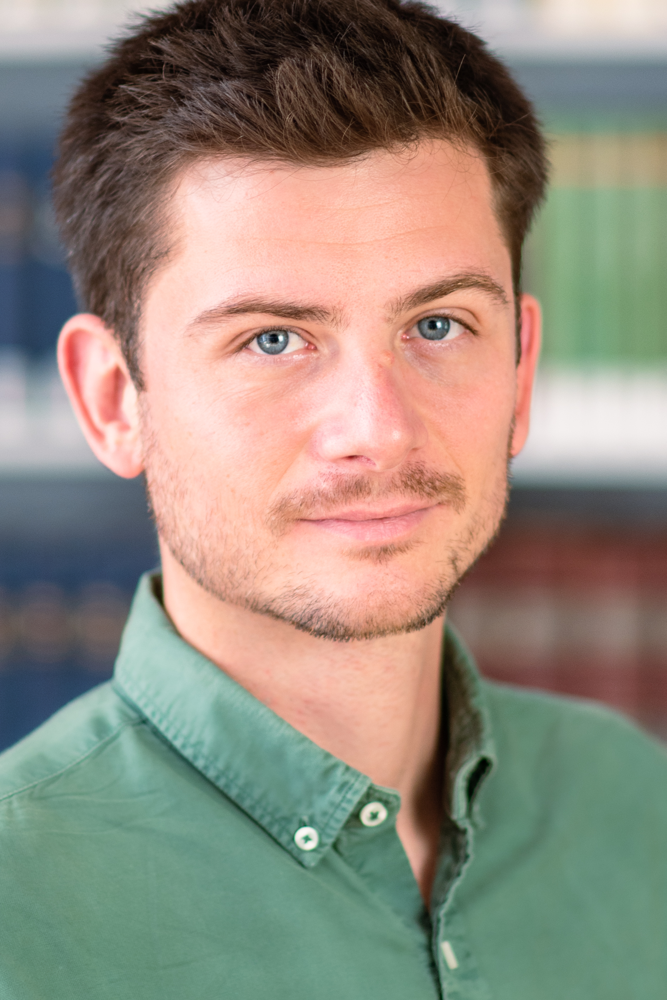

About Me
I am a political scientist and migration scholar, currently a postdoctoral researcher at the University of Bonn and a guest researcher at the Max Planck Institute for the Study of Religious and Ethnic Diversity (Germany).
My work focuses on migrants’ political incorporation in relation to political parties, state policies, and political behavior across Europe, Latin America, and global contexts, using both quantitative and qualitative methods.
I hold a PhD from the University of Sussex and I am a research affiliate to the research group Transnational Reltions, Democratization and Migration (TransDeM), located at the Universitat Autònoma de Barcelona (UAB). Previously, I was a postdoctoral researcher at the Ludwig-Maximilians-Universität (LMU) Munich, visiting research fellow at the Institute of Governance and Public Policy at the UAB, and the Department of Political Science and Public Law at the UAB.
On this site you can find an overview of my research, information about my teaching, and how to get in touch.
Recent Highlights
- New article: "Widespread, but also popular? Exploring attitudes to diversity policies”, European Political Science Review (2025). View article
- New working paper: "Who gets a seat at the table? Immigrant-origin politicians in party executive roles"
- Conference participations in 2026: "The overlooked party members: understanding migrant participation in German politics", scheduled to be presented at the 2026 IMISCOE conference in Girona, Spain, and the 2026 Dreiländertagung at Zeppelin University in Friedrichshafen, Germany